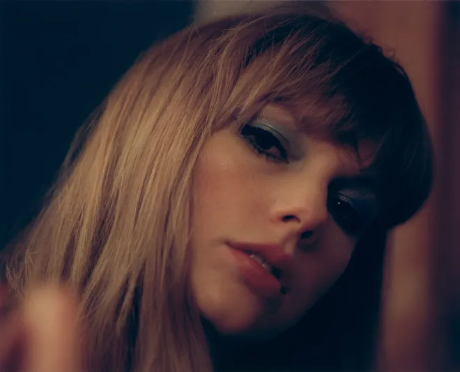

We lie awake in love and in fear, in turmoil and in tears.
We stare at walls and drink until they speak back.
We twist
in our self-made cages and pray that we aren’t – right this minute –
about to make some fateful life-altering mistake.
This is a collection of music written in the middle of the night, a
journey through terrors and sweet dreams.
The floors we pace and
the demons we face.
For all of us who have tossed and turned and
decided to keep the lanterns lit and go searching – hoping that just
maybe, when the clock strikes twelve… we’ll meet ourselves.
Midnights, the stories of 13 sleepless nights scattered throughout my
life, will be out October 21.
Meet me at midnight.
우리는 사랑과 두려움 속에서, 그리고 혼란과 눈물 속에서 잠에 들지 못할
때가 있어요.
벽을 응시한 채로 거기서 답을 얻을 때까지 술을
마시기도 해요.
스스로 만든 우리 안에 자신을 구겨 넣고 삶을 바꿀만한 운명적인 실수가
아니기를 기도하죠.
이건 한밤중에 쓴 음악들의 모음집이고, 악몽과
달콤한 꿈들 사이를 오가며 헤쳐나가는 여정이에요.
우리가 서성거렸던 바닥에서 우리가 마주했던 악마들과 관련된 얘기죠.
누워서 잠을 못 자고 뒤척이다 결국 등불을 켜고 원인을 찾기 위해서 나선
우리를 위한 노래들이에요.
시계가 12시 자정을 가리키는 순간,
진정으로 우리 스스로를 마주하길 바라죠.
제 인생에서 뜬 눈으로
지새우던 열세 번의 밤 이야기를 담은 [Midnights]가 10월 21에 찾아옵니다.
자정에 만나요